Everything a Jesus postgraduate needs in one place, what the Caff is serving today, who to talk to, and how the MCR works.
Events and sign-ups, formal swaps, the notice board, room bookings, minutes and the anonymous feedback desk all live in the members’ app. Sign in with your College Google account.
Start here
Everything else
Michaelmas 2026
If this is your first term as a postgraduate student at Jesus, welcome to the College. The MCR is the postgraduate community here, and the Committee is here to help make your time at Cambridge enjoyable, intellectually stimulating, and fun.
Tuesday 15 September to Wednesday 30 September. Please note that the College may also host important events in October. More details will be shared with you soon.
Open the timetable full sizeThe timetable is a PDF. Open it here, and it will draw properly on a bigger screen.
We run Freshers’ Fortnight with the Tutorial Department and the Admissions Office, and the details come by email. Check it.
The College has a great deal of useful information in the Postgraduate Handbook and the Offer Holder Information pages. You will need to log into JNet using [your CRSid]@jesus.cam.ac.uk and your JNet password, once you have received it.
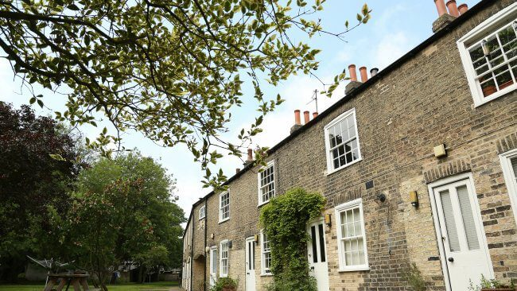
Arriving at Cambridge
Accommodation, registration and all the admin side of arriving is handled by the Tutorial Department within the College. You will find their contact details on the People page of the College website, under ‘Staff and Departments’, then ‘Tutorial’. If you have any questions about your arrival, they are in the best position to help.
Postgraduate accommodation is in various houses, almost all of which are near the College or in the grounds itself. All houses have furniture, cooking and laundry facilities, network access and so on. It is all sorted out by Admissions or Tutorial before you start, so you will know where you are going before you arrive.
In College, and in the University, you will need a University Card. It is your student ID, your library card for the University and many Departmental Libraries, your access card to various places in College, and the card with which you pay for food in Hall or in the bar. You will want it with you all the time. Cards should be available at the Porters’ Lodge on arrival, if not, they will know where you can collect it.
Married students can also get a special University Card for their spouse, which allows access around the University. Speak to the Postgraduate Tutor and they can help arrange this. Students with registered partners will also be able to get an access card for their partner.
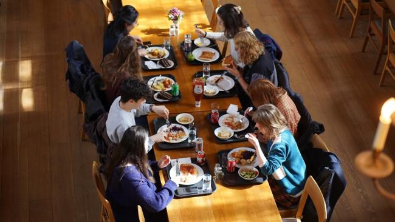
Within College, food and drink are paid for via UPay, a debit system linked to your University Card. You have to load money onto your account before you can use it. When you buy food in Caff, drinks in the Roost, or a ticket for Formal Hall online, the money is debited from your card account. The easiest way to top up is the UPay website or app.
Top up on UPayHave a look at the Useful Contacts page. Or email any of the MCR committee — they are more than happy to help.
West Court
Above the Roost bar, one floor up the far set of stairs. Sofas, a widescreen TV with Freeview, a DVD player, an Xbox Kinect, a sound system and, perhaps most importantly, a coffee machine.
Feel free to use the MCR for meeting friends, watching TV, or reading the paper with a cup of coffee. It is essentially our living room, and you will come to think of it fondly after some happy times spent there.
We want to emphasise that the MCR cannot be booked by anyone exclusively. It is a communal space everyone has access to 24/7 and everyone is invited to use at any time.
In the MCR we have a selection of newspapers, magazines, fiction books from the library, board games and a croquet set for your use.
If you are planning something bigger — pre-dinner drinks before Formal Hall for a birthday, say — put it through the app rather than hoping the room is free.
An approved booking does not empty the room, so it is still worth posting it on the MCR Facebook group: the people already sitting there are the ones worth telling.
The MCRNet shows when the room is already spoken for, takes your request, and sends back a permission slip once the committee has said yes — which is the piece of paper the Porters ask for.
Eight of them, in three groups, and none is a surprise.
Get involved
Everything the MCR runs, plus sixty-one College clubs that take postgraduates and that almost nobody finds out about.
What the MCR runs
JCSU sports and societies
These belong to the JCSU, the undergraduate union, not to the MCR. Nearly all of them take postgraduates. Pick one to write to whoever runs it.
Correct as of April 2026. The JCSU keeps this list, not the MCR. If the thing you want is missing, they will help you start it.
Getting into it
If the thing you want does not exist, the Sports and Societies Officer can usually start it.
2026 to 27
Say hello when you see us around College, or write to a role’s own address, it always reaches whoever holds the post.
Leadership
Minutes, money and study
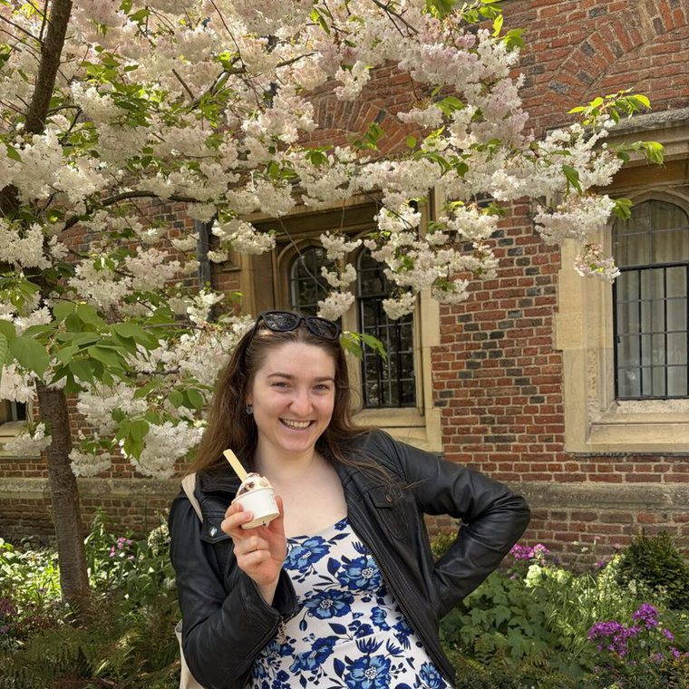
Rebecca MorseSecretarysecretary@mcr.jesus.cam.ac.ukSocial and sport
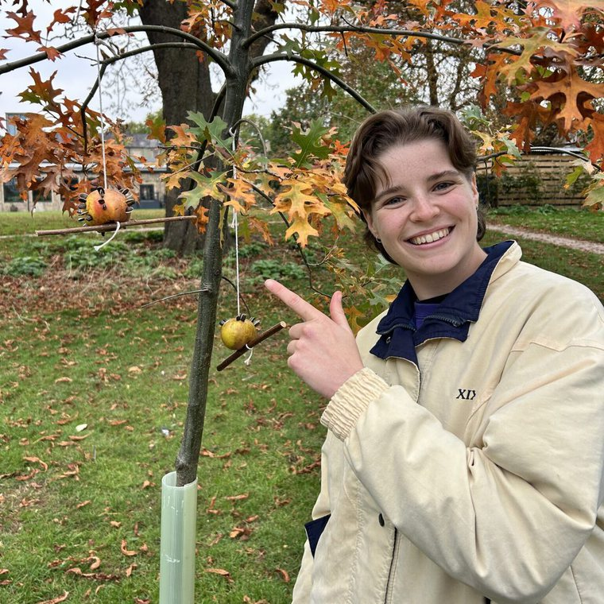
El BridsonFreshers Representativefreshers@mcr.jesus.cam.ac.ukWelfare
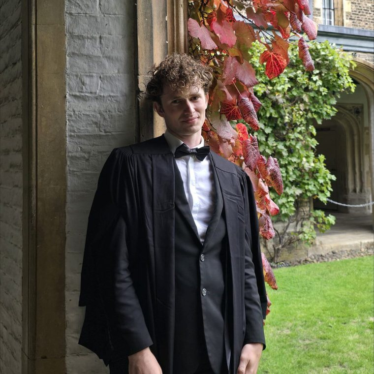
Charlie WallaceLGBT+ Welfarelgbt@mcr.jesus.cam.ac.ukGreen and web
The Graduate Tutor team
Not the MCR. These are the College officers for postgraduates, and they are the people to write to about supervisions, money, accommodation or anything that has gone wrong with your course. Any enquiry can go to graduate-tutor@jesus.cam.ac.uk.
Tuesdays, 5pm to 6pm, room B4, First Court. Term time only, and there is no need to book.
The Committee represents postgraduates to the College Fellowship and the University, and keeps links with Cambridge SU and with MCRs at other Colleges. The President and the Council Representative also sit on the College Council. It is governed by a constitution, and officers are elected by the community.
Conference fund
The Jesus College MCR offers financial support to students who wish to run a conference or symposium. Awards are usually between £100 and £300.
Both of these, not either:
An email saying what the money is for, with:
Each application is taken on its own terms by the committee, usually at the meeting following its arrival, and the graduate tutors are sometimes asked for a view first.
The fund is finite, so an event or a group that has not had MCR money before is prioritised over one that has.
You can ask for the money upfront, because a conference that has to be paid for first often cannot happen at all. Keep every receipt either way. The Treasurer will be in touch to arrange the transfer.
If you are weighing up whether your event is the sort of thing the fund pays for, these are the answer.
Green affairs
Plenty of small things are worth doing while you are here, and the College has committed to three large ones with dates attached.
Working with the JCSU Green Officer, our Environmental and Ethical Affairs Officer has put together an A to Z guide to sustainability. Download it today and find out how you can make small changes that add up to big differences.
A to Z Student Sustainability Guide (PDF)Jesus College has published a series of documents on its environment and sustainability policies and practices:
In June 2021 the College released a Responsible Investment Policy. Its key commitments are to:
Support
Somebody is on duty every hour of the year, and the Lodge will find them. Everything below is the longer answer: who to ask, what they look after, and the numbers worth having in your phone before you need them.
| Who | Contact |
|---|---|
| Emergency services — crime, fire, or anything medical and serious | 999 |
| Porters’ Lodge, every hour of the year | 01223 339339 |
| Welfare Tutor on duty, any hour | Ask the Lodge — 01223 339339 |
Ring the Lodge as well as 999, so the College knows. There is a Welfare Tutor on duty every hour of the year and the Porters know who it is. Accident and Emergency at Addenbrooke’s is for loss of consciousness, severe chest pain, serious accidents and broken bones, heavy bleeding, and anything else life-threatening.
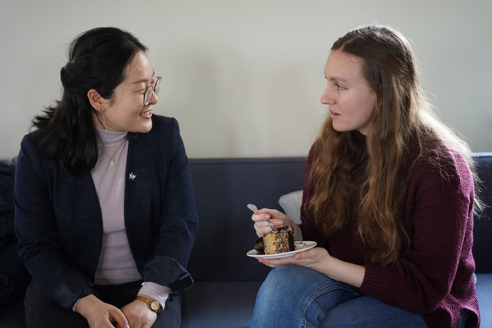
The MCR welfare team — the two Welfare Officers, the International Officer and the LGBT+ Liaison — can be reached by email, by pigeonhole, or in person. Their names and addresses are on the Committee page, and you can write to them without giving your name (see below).
There is useful information on the College’s welfare pages. You can also find welfare advice from the Graduate Union and the Cambridge University Students’ Union, as well as the Student Advice Service.
You can also find more specific information from the MCR about counselling and advice and sexual health, as well as information for those with families and/or partners in Cambridge.
For most incidents the people to call are the Porters. They can be reached on 01223 339339 or at the Porters’ Lodge itself. They will be able to help out with many situations, or at least tell you who you should call if they can’t help.
To access mental health support, a good first port of call is the College’s welfare pages, which list the various channels through which you can get help. There is a Welfare Tutor on duty 24/7/365, the Porters know who is currently on duty, in the Lodge or on 01223 339339.
If you are having problems with the building you are living in (i.e. maintenance problems) you can report these online at JNet or to the housekeepers. If you have any other questions or concerns, feel free to contact any member of the MCR Committee, and we will do our best to help.
You do not have to put your name to a welfare message. In the app, a welfare thread goes to one officer and the President and to nobody else, and there is a box to tick that keeps your name off it. They can still write back; they just will not know who you are.
Ask something, or say something, without your name attached. Nothing on this public page can do that — the app can.
If you would rather not use the app at all, every officer’s address is on the Committee page, and the SU Student Advice Service sits entirely outside the College.
Cambridge may appear quiet and safe, but even so, security measures are important. There is no need to panic, but we want you to be alert to potential risks, especially at night. Avoid the public parks after dark. Also, if you see anything suspicious around College, please contact the Porters.
Three things worth remembering, none of them Cambridge-specific except the last:
If you need a taxi to return to College at night, you may telephone the Porters’ Lodge, giving your name and location and, as necessary, the telephone number for contact purposes. The College will pay the taxi company and debit your College account. The Porter may wish to verify your identity by asking for your College address.
There is a lot of drink about in the first few weeks and none of it is compulsory. Nobody at Jesus is expected to drink, for any reason or for none, and there are non-alcoholic drinks at every MCR event.
You must register with the College Nurse so that she can help you during your studies at Cambridge. When you first arrive at College you are asked to complete a form, which is kept confidentially in the College Nurse’s office. In the UK you must register with a National Health Service General Practitioner (GP) — there are lots nearby. You should let the College Nurse know which one you’ve registered with, for her records.
If you have any concerns about your own health or that of a colleague or housemate, please contact the College Nurse on one of the telephone numbers shown above or attend one of her surgeries. The College Nurse is located on the ground floor of Staircase 1, Library Court. Please inform the porters if you are unwell. The Porters’ Lodge is open 24/7 and all Porters are trained First Aiders.
If any of your personal health details should change, it is important that the College Nurse is kept informed. Any student (or partner of a Jesus student living in College) should notify the College Nurse if they or their partner become pregnant. If a parent or another relative comes to stay in a College house to help, the Graduate Tutor has to give permission and the Tutorial Office and the Lodge record that they are there.
There is no University Dental Service, but there are dental practices nearby.
Jesus College has an ethos of tolerance, friendliness and consideration for others. You should never have to put up with anyone else’s bullying or harassing behaviour. Should you feel that you are being harassed don’t hesitate to speak to a member of the Committee, in particular the Welfare officers, International officer, any member of the JCSU welfare committee, or any of the Welfare Tutors (contact the Porter’s Lodge to find out who is on duty). All can offer confidential advice. Your problems will be taken seriously and procedures are in place should you wish to make an official complaint. We can also direct you to further support or counselling services if needed. The College has an official policy on harassment.
The rest of the support pages
Support
Somebody will listen at any hour, and you do not need a diagnosis, a reason or an appointment to start. The numbers are below; everything after them is the longer version.
| Who | Contact |
|---|---|
| Welfare Tutor on duty, any hour of the year | Porters’ Lodge, 01223 339339 |
| Linkline — students, listening, not advising. 7pm to 7am in full term | 01223 744444 |
| Samaritans, day or night, crisis or not | 116 123 |
None of these three needs a reason, a referral or an appointment, and none of them will tell the College anything you have not asked them to.
The Welfare Tutors are available to listen and to offer help with any problems that are not purely academic or administrative. Undergraduates and postgraduates are welcome to contact any of them. Every day in term time there is a Welfare Tutor on duty who can be contacted whatever the hour in case of an emergency or urgent problem through the Porters’ Lodge on 01223 339339. Out of term, ring the Lodge or the Tutorial Department on N Staircase, 01223 339468.
If the prospect of speaking to a member of staff is also daunting, the MCR Welfare Officers would provide a listening ear or get started with procedures on your behalf. If your complaint is about a Welfare Tutor or Officer, you can still speak to us and we will do everything we can to ensure that you feel heard.
You do not need a diagnosis to book. Rachel Michel is the College mental health nurse, and she sees students about anything from academic stress to something that is simply not going well. If you would be better served elsewhere she will say so and point you there.
Additional information on surgery times and contact details for the College nurse, mental health nurse and physiotherapist can be found here.
The library has a Personal Welfare section in the building at classmark PYW. These books cover topics ranging from study help to personal welfare and may be browsed and borrowed as normal. We welcome suggestions to improve and expand this section.
You may also be interested in the following:
During Easter term the library has a collection of relaxation aids that are left out in the Garden Room, including colouring books, origami, jigsaws, and puzzles.
The University Counselling Service is free, confidential and open to every student. Book online; the form takes as much or as little as you want to give it, and they write back to arrange a time.
The Student Union provides a Student Advice Service for confidential advice ranging from making friends through academic support to student finance.
Linkline is a listening service on 01223 744444, run by students for students in Cambridge. The telephone lines are open from 7pm until 7am each night during full term, and there will always be both a male and female volunteer available. Linkline is not a counselling service and so the volunteers won’t tell you what to do, but they will provide a confidential listening ear.
The Samaritans offer a confidential, round-the-clock listening ear, off the record, whatever is getting to you, you don’t have to be in crisis to get in touch. Call 116 123, free, from any phone.
Seven destinations, each one somebody else’s page rather than ours. The first three are the ones to start from if what happened involves another person.
The rest of the support pages
Support
Supplies are free and asking for them is nobody else’s business. Testing is confidential and filed by number rather than by name. And if something has happened, help does not depend on reporting it.
Help does not depend on reporting anything, and none of it has to be decided tonight. These are the people to reach first, in whatever order suits you.
One thing worth knowing that is easy to miss: the police medical examination does not test for pregnancy or for sexually transmitted infections. Those tests are done at a sexual health clinic, and Clinic 1A will do both.
Through the CUSU Sexual Health Supply Scheme, free:
The Welfare Officers cannot tell you what to do, but they can give you unbiased, judgement-free information on contraception, emergency contraception, pregnancy support and crisis support — and they will not repeat the conversation to anyone.
Everything at Clinic 1A is filed by number rather than by name. Neither your results nor the fact that you went reaches your GP, your College or anybody else without you saying so. It is the local GUM clinic, at Addenbrooke’s.
You can talk to your GP (doctor) about contraception and family planning.
The rest of the support pages
Support
A good number of postgraduates arrive with a partner, or with children, or both. Three things are worth doing early; everything after them is detail.
If you have arrived with your family, you are welcome to inform the Welfare Officers who can assist you to get in touch with crèches, schools, baby-sitters and childminders.
The Senior Postgraduate Administrator is the College’s childcare contact. They keep a contact list of student families with children, so please let them know if you wish to be added. Some events for Fellows and their families are organised by the College throughout the year, and postgraduate families are invited to many of them.
A registered partner can use the gym and come to Formal Hall as your guest. The form is above.
The University’s Childcare Office runs a central fund for unforeseen pre-school and after-school costs, holds a good deal of practical information for student and staff parents, and runs the Student Parent email list, which is the best single source for children’s activities around the city.
The Newcomers’ Group is run by volunteers, who organise Coffee Mornings during term time at the University Centre (Grad Pad), for the families of those attached to the University. Children are welcome and toys are provided. They also run a neighbourhood scheme that introduces new families to people already here, and a small-ads page for the pushchairs and high chairs everybody buys and sells twice.
Of course, all members of your family are very welcome to attend MCR events. Some events are particularly child friendly. There will also be other events throughout the year, so look to the MCR bulletin for information on upcoming events.
The rest of the support pages
Sport & Societies
The MCR facilitates punting in two ways: our own punt, the Rooster, exclusively bookable by MCR members, and membership of the Scudamore’s Student Punt Scheme for discounted hire rates.
The Rooster is the Jesus College MCR Punt, exclusively for use by our postgraduate students and their accompanying guests. It can be booked from the end of March to the beginning of October each year, after which it is stored for the winter.
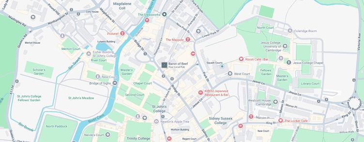
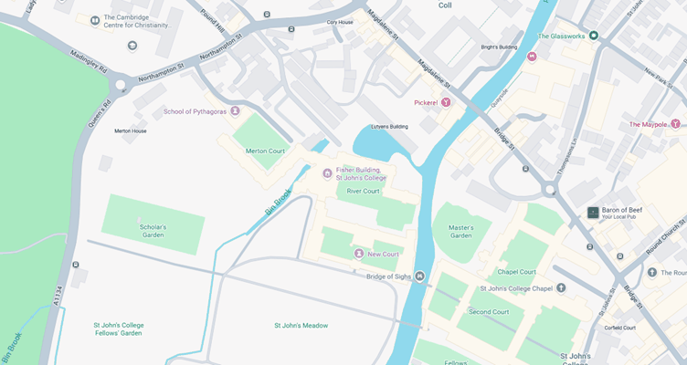
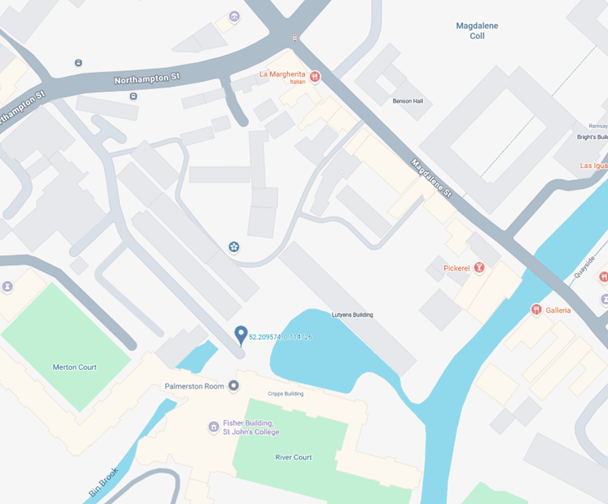
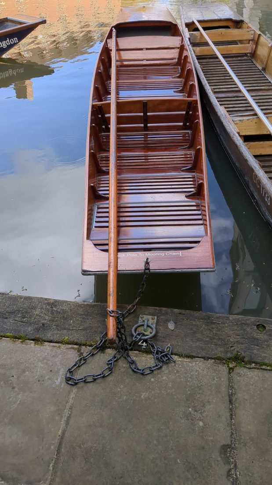
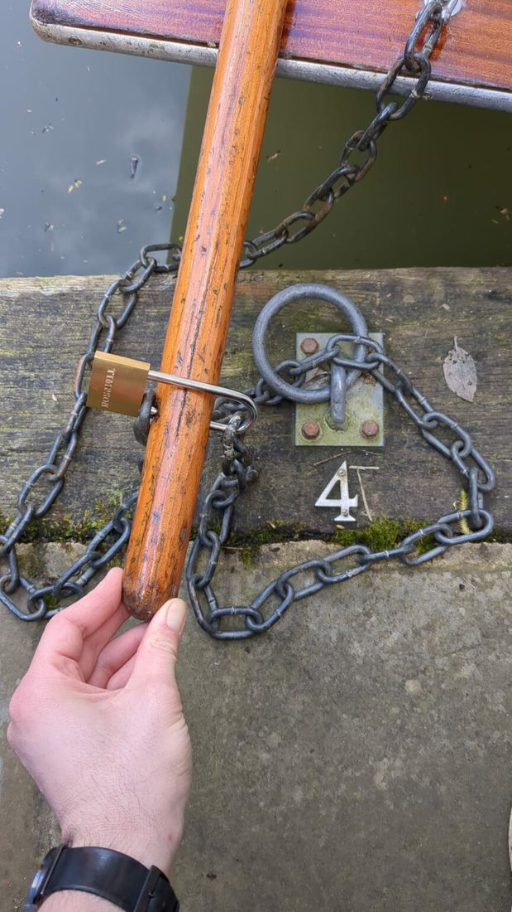
The keys for the punt as well as the keys to our cushions locker are stored in a lockbox that is attached to our locker in the basement near the Johns punt pool. The code for the lockbox will appear on your UPay booking. Please be sure to return the keys to the lockbox when you are finished punting.
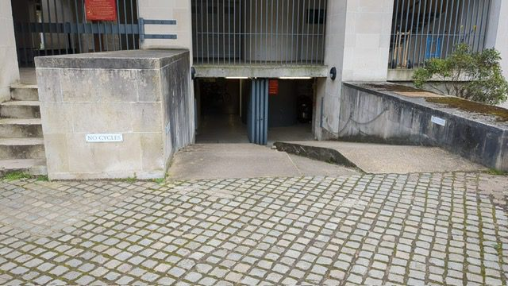
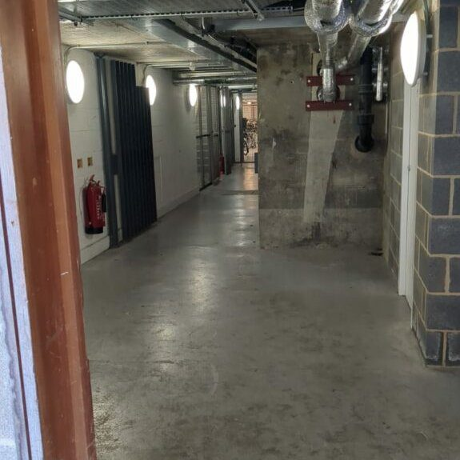
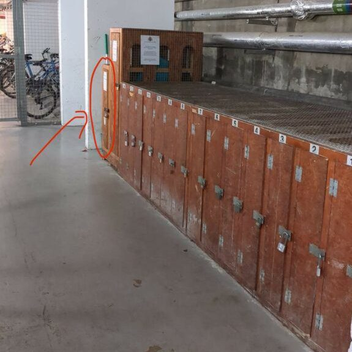
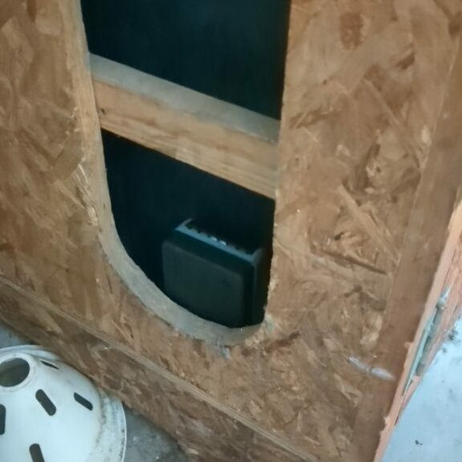
To access the discounted rates, you must book Scudamore’s services (including self-hire) via this link instead of their main site. On average, your booking will be discounted by 30 to 50% depending on the time of year and how far in advance you make your booking. When you go to your punting trip, you must present your valid CamCard to authenticate your access to the scheme.
Please note the following conditions about the scheme:
Reference
The College pages, forms and accounts postgraduates reach for most, gathered in one place with the address of each. Where this describes a College service, the College’s own pages are the current position. First aid and health now has a page of its own, as do sport and societies.
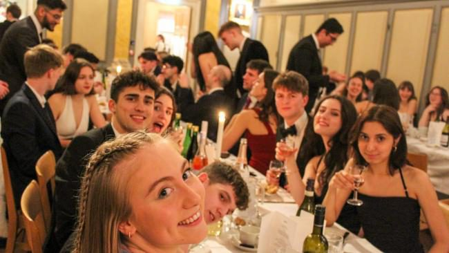
The College pages and forms postgraduates reach for most, with the address of each one. They are kept live in the members’ app, so if one has moved the app is the place that will know first.
The three everybody needs3
Day to day6
Your course and your money4
Living here6
A gown2
A second shelf holds short guides to particular College and University processes, each with a contact and a link, kept current by the committee rather than written once and left. Bookings live there too: the punt, formal swaps, event sign-ups, the notice board, and asking to hold something in the MCR. The common room itself stays open to every member and is never booked out.
Support
Where to go for anything health related, from an emergency to registering with a GP, in the order worth considering them. Opening hours and direct numbers go stale without anyone noticing, so those are linked rather than copied out; what is written here is the part that does not change from year to year.
Chest pain, trouble breathing, bleeding that will not stop, somebody who will not wake up, a serious blow to the head, weakness on one side of the face or body, or thoughts of ending your own life.
Ring the Porters as well, on the number below. A Porter will reach you before an ambulance can find the right staircase, they will meet it at the gate and bring it in, and they are trained in first aid. Give the operator the college address and the staircase and room, and stay on the line.
| Number | For |
|---|---|
| 999 | Ambulance, police, fire |
| 01223 339339 | Porters’ Lodge, any hour |
| 111 | NHS advice, any hour |
| Door | Use it for | Consider it |
|---|---|---|
| 999 or A and E | Life threatening, or an injury that cannot wait | Now |
| NHS 111 | You are not sure how serious it is | Now |
| The Health and Wellbeing Centre | In college, Library Court | This week |
| A pharmacy | A cough, a rash, hay fever, emergency contraception | Today |
| Your GP | Anything ongoing, prescriptions, referrals, vaccinations | First fortnight |
| A dentist | Toothache, check-ups, anything that has cracked | Register early |
| Welfare and counselling | How you are doing, rather than a symptom | Any time |
| A long-term condition or a disability | Anything that needs arranging in advance | Early |
Addenbrooke’s Emergency Department, Hills Road, Cambridge CB2 0QQ, is open at every hour of every day. You do not need to be registered with a GP and you do not pay at the door. Bring identification and your visa share code if you have one, nobody is turned away without them.
Patients are seen by how ill they are, not in the order they arrived, so the wait can run to hours. If somebody can be moved safely and it is not life threatening, making your own way there is usually quicker than waiting for an ambulance. Anything that is not an emergency at all will be seen sooner somewhere else: 111, a pharmacy, an urgent treatment centre, or your own GP.
It is two and a half miles south of Jesus, on the Biomedical Campus. The Universal and the Citi 1 and 2 buses run there, a taxi takes about fifteen minutes in normal traffic.
Addenbrooke’s (CUH)Free, answered at every hour of the year, and the right first call whenever you cannot tell how bad something is. They will tell you what to do, and they can do more than advise: book you a slot at an urgent treatment centre, arrange an out of hours GP appointment, send a prescription to a pharmacy that is open, or have a nurse or doctor ring you back.
111 online answers the same questions for anything not urgent, interpreters are available on the phone line if you ask, and 18001 111 reaches the service through Relay UK.
Ring 111 111 online (NHS)In college, Library Court. Staffed by a Community Health Practitioner and a Mental Health Nurse, and the college physiotherapist is arranged through the Practitioner. Register there when you arrive, as well as with a GP rather than instead of one. It is the sensible first stop for an ordinary problem, and they know which door in college opens next when it turns out not to be ordinary.
It is not a GP surgery and cannot be your registered practice, so a prescription, a referral or a sick note still comes from your GP.
What you say there is confidential and is not passed to your department or your supervisor without your agreement, except in the rare circumstances where anybody in the NHS would have to act. If you want something taken up with your department, say so and they will help you do it.
No appointment, and the door people forget. A pharmacist can treat a good deal outright, will say plainly when something needs a doctor, and will usually see you the same day.
They also handle emergency contraception, which works better the sooner it is taken, and they have a private room if you ask for one rather than saying it at the counter.
NHS prescriptions in England carry a fixed charge per item, whatever the medicine costs. If you are on a low income, the NHS Low Income Scheme can cover it, and a prepayment certificate is cheaper than paying per item once you need more than a few in a year. Contraception is free.
111 will name the nearest pharmacy that is open, which matters on a Sunday.
Help with health costs (NHS) Sexual health, iCaSH (NHS Cambridgeshire)Do this when you arrive, not on the morning you wake up ill. Being registered at home does not cover you in Cambridge and you cannot be registered in two places. It is free, and you need neither proof of address nor an NHS number, nor to be a British citizen.
Put your address into NHS Find a GP, which lists the practices whose catchment covers it, then register through that practice. It takes a few working days. If you are here only for a short period, ask to be seen as a temporary resident instead and leave your registration at home in place.
Once you are registered, the NHS App is worth ten minutes: it holds your NHS number, orders repeat prescriptions, shows test results and gives you your vaccination record.
Two things to ask about in your first term. The meningitis MenACWY vaccination is recommended for students and is free if you have not had it. So is the flu jab for anybody in an at-risk group, from around October.
Find a GP (NHS) The NHS App Lensfield Practice Newnham Walk SurgerySeparate from your GP, and the one people forget until it is three in the morning. NHS dentists taking new patients are genuinely scarce in Cambridge, so look while you have no toothache rather than when you do. You can register with any practice regardless of where you live, and there is no catchment.
NHS dental treatment is charged in bands rather than free: one price for an examination, a higher one for fillings, higher again for crowns and dentures. The Low Income Scheme covers this too.
For sudden pain out of hours, ring 111 and ask for the emergency dental service rather than going to A and E, which cannot treat teeth.
Find a dentist (NHS) What NHS dentistry costsSeveral routes, and none of them is more legitimate than the others. You do not have to be in crisis to use any of them, and using one does not close the others.
If you have a condition that will need managing while you are here, two things are worth doing before term rather than during it. Register with a GP early and ask them to request your records, so a repeat prescription does not lapse in the gap. And tell the University’s Accessibility and Disability Resource Centre, which arranges adjustments for teaching, examinations and fieldwork.
College can help with accommodation and with anything about your room, and the Tutorial office is the place to raise it. None of this goes to your examiners as anything other than an adjustment.
Disability Resource Centre (the University)It is not insurance and there is nothing further to buy. Being asked for payment at a GP surgery or a hospital is a mistake worth querying rather than paying.
If you are in the country for six months or more, register with a GP as everybody else does, and do it early. Prescription charges, dental bands and eye tests are the same for you as for anybody else: those are charges within the NHS, not charges for being a visitor.
Bring what repeat medication you can and a letter from your doctor at home naming it, since brand names differ and the first UK prescription is easier to arrange with the old one in front of somebody. Check before you travel that anything you take is legal to bring in.
Directory
In an emergency dial 999, or the Porters’ Lodge on 01223 339339, which is staffed every hour of the year. Everything else here is a directory: who to write to, and what each of them looks after. Search it, or start from the table below. For anything medical, First aid and health is the page.
Every contact on this page at once: tutors, porters, doctors, counsellors and emergency numbers.
| Who | Contact |
|---|---|
| Emergency services | 999 |
| Porters’ Lodge (24 hours a day, 365 days a year) | 01223 339339 |
| NHS 111, when you cannot tell how serious it is | 111 |
| Samaritans, day or night | 116 123 |
The College and the University run on committees, and it is often not obvious who to write to. Twelve common cases, and the address for each.
| Topic | Contact |
|---|---|
| Accommodation | the Student Rooms team |
| University Card, general admin | the Senior Postgraduate Administrator: graduate-tutor@jesus.cam.ac.uk |
| Food and drink within College | the Catering Office. Email the Manciple: manciple@jesus.cam.ac.uk (Manciple is a Cambridge word for the person who runs the catering) |
| Freshers events organised by the MCR | the MCR Social Officers: social@mcr.jesus.cam.ac.uk |
| Freshers events organised by the College | probably the Senior Postgraduate Administrator: graduate-tutor@jesus.cam.ac.uk, unless organised by a different department |
| Your course | email your Departmental Administrator, or see the list of Departments on the University’s website, then look for the ‘About Us’ or ‘People’ section within the Departmental website |
| Welfare issues | see our Welfare pages for comprehensive information on where to go for help (including within the University and the College) |
| Sports | the MCR Sports Officer: sports@mcr.jesus.cam.ac.uk. also see the Sports page on JNet for court booking and gym info, or the University sports pages |
| IT issues in College | the College IT Officers: it-support@jesus.cam.ac.uk |
| The Library | the Librarian: quincentenary-library@jesus.cam.ac.uk |
| General help | the Porters: porter@jesus.cam.ac.uk (Porters in Cambridge are gatekeepers and generally tend to know everything and everyone, they are not there to carry your bags!) |
| The Postgraduate Conference | the MCR Academic Officer: academic@mcr.jesus.cam.ac.uk |
Every student is assigned a Tutor, and for postgraduates that is the Graduate Tutor, supported by a small team because the post covers more than four hundred people. You can go to any Tutor about anything at all, however large or small; they will listen in confidence and point you at expert help when it is needed. Most hold a drop-in.
The Tutors who are part of the College administration form the Tutorial Department, located on First Floor, N Staircase, Second Court. They organise everything related to students, including:
Full information is found on the Postgraduate pages within JNet, particularly on the Academic Support page. You can request letters here, and access the full list of tutors via JNet.
| Who | Contact |
|---|---|
| Dr Michael Edwards. Graduate Tutor, room B4, First Court | graduate-tutor@jesus.cam.ac.uk or mje28@cam.ac.uk |
| Dr Fiona Green. Deputy Graduate Tutor | via graduate-tutor@jesus.cam.ac.uk |
| Dr Sybil Stacpoole. Assistant Graduate Tutor | via graduate-tutor@jesus.cam.ac.uk |
| Rebecca Williams. Senior Postgraduate Administrator (office hours 09:00 to 15:00, Monday to Wednesday and Fridays, Tutorial Department) | (01223) 339421 or graduate-tutor@jesus.cam.ac.uk |
When you arrive you are assigned a College Contact: a Fellow from your faculty or something near it, told to you on arrival. They are there for the informal question — the academic or professional one your supervisor does not cover and the Welfare Tutors would not — and for making sure new postgraduates get asked to things.
The College Porters are responsible for the college’s safety and security. They can be found at the Porters’ Lodge (P’Lodge) at the end of the Chimney, at the main Tower Gate. Their office is open and staffed 24 hours a day, every day, both in term and out. As your first point of contact with the College, the Porters are a great source of knowledge and are definitely the people to ask when you don’t know something, including about contacts and places in College.
| Who | Contact |
|---|---|
| Porters’ Lodge (P’Lodge) | 01223 339339 |
| Porters, general enquiries | porter@jesus.cam.ac.uk |
At the Porters’ Lodge, you can:
East House is where you need to go to pay College bills or fees, or to pick up grant or scholarship cheques. The finance office is on the first floor on the left, and is open Monday to Thursday, 2:30pm to 4:30pm (around the time bills are due, these hours are extended to 10:00am to 12:30pm and 2:30pm to 4:30pm, Monday to Friday).
Council approves everything that happens in and to the College, from building work to student provision, on set dates through the year, and its minutes are in the library and on JNet. Four junior members sit on it — the JCSU President, the MCR President, and one elected representative from each — and all four are Trustees of the College.
Who is who in College
| Role | Name | Notes |
|---|---|---|
| The Master | Sonita Alleyne | Head of College. Extremely approachable, don’t be afraid to talk to her. |
| The President | Prof Ian Wilson | Head of the Fellowship (the senior members of College, such as Fellows, visiting Scholars, and College Post-doctoral Associates or Research Associates). |
| The Dean of College | Prof Clare Chambers | Responsible for student discipline and reviewing event permit applications. |
| The Senior Tutor | Dr Paul Dominiak | Responsible for all junior members of College (undergraduates and postgraduates), Also in charge of parking permits. |
| The Graduate Tutor | Dr Michael Edwards | Tutor for all postgraduate students. |
| The Deputy Graduate Tutor | Dr Fiona Green | Assists the Graduate Tutor. |
| The Senior Postgraduate Administrator | Rebecca Williams | Often your first point of contact with the Postgraduate Tutors, and receives emails sent to them. |
| The Assistant Graduate Tutor | Dr Sybil Stacpoole | Responsible for the Postgraduate Development Programme. |
| Role | Name | Notes |
|---|---|---|
| Student Wellbeing Lead | Mary Simuyandi | Coordinates welfare across College, and is the person to raise a pattern with rather than a single incident. |
| The Community Health Practitioner (formerly the College Nurse) | Naomi Walker | Assists/advises/administers medical treatment, manages the twice-weekly physiotherapy clinics, can refer you to other medical professionals when necessary. |
| The College Mental Health Nurse | Rachel Michel | Can offer confidential support, assessments, and advice on a range of mental health and wellbeing concerns, from academic stress to emotional difficulties. |
| The Dean of the Chapel | Rev Dr James Crockford | Responsible for the Chapel and pastoral support, regardless of religious background. |
| Role | Name | Notes |
|---|---|---|
| The (Senior) Bursar | Dr Richard Anthony | Oversees the College Finances. |
| The Domestic Bursar | Stuart Websdale | 01223 760516 / domestic-bursar@jesus.cam.ac.uk |
| The Tutorial Administrator | via the Tutorial Department, graduate-tutor@jesus.cam.ac.uk | Oversees housing and various other administration. |
| The Financial Tutor | via the Tutorial Department, graduate-tutor@jesus.cam.ac.uk | Responsible for all matters relating to financial hardship: applications to Access Funds, the Supplementary Maintenance Committee, the General Scholarship Fund and other special College funds, as well as making special arrangements for paying your College bills. |
| Role | Name | Notes |
|---|---|---|
| Head Porter and Duty Porters | Simon Durrant (Head Porter) | Responsible for College security. |
| Housekeeping | Sonia Horton (Head) | Responsible for the cleanliness of accommodation. |
| Maintenance team | Haidee Carpenter (Coordinator) | Responsible for the upkeep of College buildings. |
| Housing Management | Isabel Harrison (Head) | Room allocation, moves, and the leases on the College houses. |
Editors only
Change any word, address, link or picture on the public site, and it changes for everybody the moment you save.
Sign in with your Cambridge Google account. Only addresses on this site’s editor list can change anything, and the list is kept on the server rather than in this page.
Press Start editing in the black bar at the top, then browse the site as normal. Everything that can be changed is outlined. Click a paragraph, a heading or a table cell and type. Click a picture to replace it. Click the small link handle on a link to change where it goes.
Nothing is saved until you press Save. Anything you clear back to empty goes back to the wording this page ships with.
Anybody on this list can change the site. They sign in with the same Cambridge account they use for the members’ app.
| Address |
|---|
On the MCR’s own Apps Script project, not in this file. The page asks for them once when it loads and applies them over whatever it shipped with, so the file on disk never has to be edited again. Uploaded pictures and PDFs go to a Drive folder owned by the MCR account.